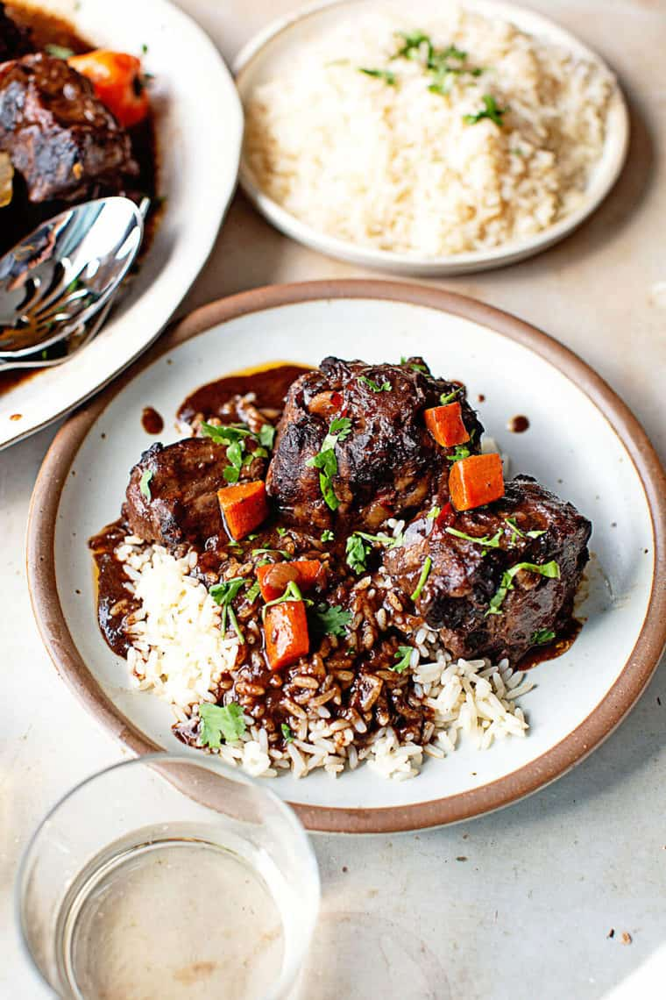

Oxtails

Description:
Jamaican oxtails are a flavorful and hearty dish,
featuring oxtail segments that are carefully
seasoned and slow-cooked to tender perfection.
The oxtails are often coated in a seasoned flour
before being browned, enhancing their rich taste.
Simmered with a medley of aromatic ingredients
like onions, garlic, carrots, and celery, and
infused with thyme, bay leaves, and optional red wine,
the dish boasts a robust and savory flavor profile.
This Jamaican classic is typically served over rice
or with other complementary side dishes, offering
a satisfying and deeply satisfying culinary experience.
Ingredients:
- 3-4 pounds oxtail, trimmed and cut into segments
- 3 tablespoons vegetable oil
- 1 cup all-purpose flour
- Salt and pepper to taste
- 1 large onion, chopped
- 4 cloves garlic, minced
- 2 carrots, peeled and diced
- 2 stalks celery, chopped
- 2 sprigs thyme
- 2 bay leaves
- 2 cups beef broth
- 1 cup red wine (optional)
- 2 tablespoons tomato paste
Steps:
- Preheat the oven to 350°F (175°C).
- In a bowl, coat oxtail pieces with flour, salt, and pepper.
- In a large oven-safe pot, heat vegetable oil over medium-high heat. Brown oxtail on all sides.
- Add chopped onion, minced garlic, carrots, celery, thyme, and bay leaves. Sauté until vegetables are softened.
- Stir in tomato paste and cook for a couple of minutes.
- Pour in beef broth and red wine (if using). Bring to a simmer.
- Cover the pot and transfer it to the preheated oven. Bake for 2.5 to 3 hours or until oxtail is tender.
- Remove thyme sprigs and bay leaves. Adjust seasoning if needed.
- Serve the Jamaican Oxtail over rice or with your favorite side dishes.